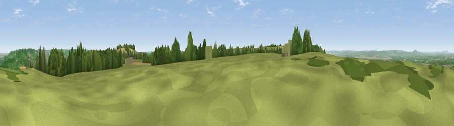

Viewpoint near Kings Stanley
#4513 in England · top 6% of its area beats it · near Kings StanleyThe view, rendered

A 360° render of this exact spot computed from the terrain model, tree cover and land cover — summer colours, afternoon light, calibrated against photographs of famous viewpoints. Real trees, hedges and buildings will differ in detail.
The panorama
Grey silhouette: terrain skyline in each direction (720 bearings, Earth curvature and refraction included). Dashed green: skyline with trees (+15 m) and buildings (+8 m) as obstacles. Blue strip: how far the ground is visible on each bearing.
Where the view opens
Wedge length = distance to the farthest visible ground on that bearing (vegetation-aware). Rings at 10, 25 and 50 km.
What fills the view
58% grassland · 26% woodland · 9% cropland · 7% built-up
Angular shares of the visible panorama (visual magnitude), not map area. Landscape diversity 0.47 (0–1 Shannon).
Key numbers
More beautiful places nearby
The staircase of upgrades: each row has a higher view potential than everything closer. Driving times are estimates from straight-line distance, calibrated against real road routing — check an actual route before setting out.
| Place | Direction | Drive | Score |
|---|---|---|---|
| Viewpoint near Nympsfield | WSW · 1 km | ~3 min | 74.9 |
| Viewpoint near Nympsfield | WSW · 2 km | ~5 min | 77.5 |
| Viewpoint near Stinchcombe | WSW · 8 km | ~16 min | 79.4 |
| Viewpoint near Stinchcombe | WSW · 8 km | ~17 min | 80.5 |
| Nottingham Hill | NNE · 31 km | ~49 min | 80.9 |
| Chase End Hill | N · 34 km | ~52 min | 81.5 |
| Ragged Stone Hill | N · 35 km | ~53 min | 82.5 |
| Midsummer Hill | N · 36 km | ~54 min | 83.0 |
51.71741, -2.27679 · source: screening · position refined by local search. Computed location — check access rights before visiting.